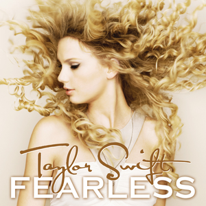

About Taylor Swift
Taylor Alison Swift (born December 13, 1989) is an American singer-songwriter that is living every teenager's dream. Her discography spans multiple genres, and her narrative songwriting, which is often inspired by her personal life, has received widespread media coverage and critical praise. Born in West Reading, Pennsylvania, Swift relocated to Nashville, Tennessee, at the age of 14 to pursue a career in country music. She signed a songwriting deal with Sony/ATV Music Publishing in 2004 and a recording deal with Big Machine Records in 2005, and released her eponymous debut studio album in 2006. Swift explored country pop on her second and third studio albums, Fearless (2008) and Speak Now (2010); the success of the singles "Love Story" and "You Belong with Me" on both country and pop radio established her as a leading crossover artist. Swift experimented further with pop, rock, and electronic genres on her fourth studio album, Red (2012), which was supported by the singles "We Are Never Ever Getting Back Together" and "I Knew You Were Trouble". With her synth-pop fifth studio album 1989 (2014) and its singles "Shake It Off", "Blank Space", and "Bad Blood", she shed her country image and transitioned to pop completely. The subsequent intense media scrutiny on Swift's personal life inspired her sixth studio album Reputation (2017), which delved into urban sounds, led by the single "Look What You Made Me Do".
Parting ways with Big Machine to sign with Republic Records in 2018, Swift released her seventh studio album, Lover, in 2019. Inspired by escapism during the COVID-19 pandemic, she ventured into indie folk and alternative rock on her 2020 studio albums, Folklore and Evermore, receiving acclaim for their nuanced storytelling. To gain ownership over the masters of her back catalog, Swift released two re-recorded albums in 2021, Fearless (Taylor's Version) and Red (Taylor's Version). Besides music, she has played supportive acting roles in films such as Valentine's Day (2010) and Cats (2019). Swift has released the autobiographical documentary Miss Americana (2020), and the self-directed musical films Folklore: The Long Pond Studio Sessions (2020) and All Too Well: The Short Film (2021), among other specials.
Having sold over 200 million records worldwide, Swift is one of the best-selling musicians of all time. She has scored eight Billboard Hot 100 number-one songs, including "All Too Well (10 Minute Version)"—the longest song ever to top the chart. Her accolades include 11 Grammy Awards (including three Album of the Year wins), an Emmy Award, 12 Country Music Association Awards, 25 Billboard Music Awards (the most wins for a female artist), 34 American Music Awards (the most wins for an artist) and 55 Guinness World Records. She featured on Rolling Stone's 100 Greatest Songwriters of All Time (2015), placed eighth on Billboard's Greatest of All Time Artists list (2019), and appeared multiple times on listicles such as the Time 100 and the Forbes Celebrity 100. Named the Woman of the 2010s Decade by Billboard and the Artist of the 2010s Decade by the American Music Awards, Swift has been recognized for her influential career as well as advocacy of artists' rights and women's empowerment in the music industry.
| Album cover | Name of album | Date released | Re-recorded? |
|---|---|---|---|
 |
Taylor Swift | October 24, 2006 | ☐ |
|  | Fearless | November 11, 2008 | ☑ |
 |
Speak Now | October 25, 2010 | ☐ |
 |
Red | October 22, 2012 | ☑ |
 |
1989 | October 27, 2014 | ☐ |
 |
Reputation | November 10, 2017 | ☐ |
 |
Lover | August 23, 2019 | N/A |
 |
Folklore | July 24, 2020 | N/A |
 |
Evermore | December 11, 2020 | N/A |